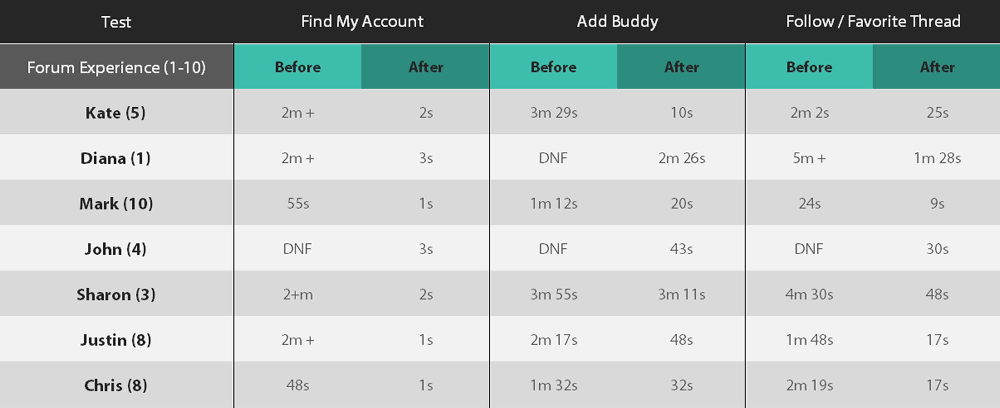

PBNATION

PbNation is a free english based forum known to have more user traffic than all other paintball media combined.

ABOUT
Being user generated, the site offers field and store directory, product reviews, a market for buying, selling, and trading, a place to organize events, and a great place to share information, pictures and videos.
MY ROLE
Being a solo project, I did everything from the user interviews, user stories, creating the persona’s, site mapping and flow charts, to iterating and testing of wireframes and mockups, all the way up to the prototype version. Oh, and I also did the rebranding of the logo.
OBJECTIVES
After gathering user feedback from interviews, the primary goals of the redesign and rebrand were to:
- Focus on allowing users to find content faster; increasing user efficiency
- Allow users a better way to save, follow and favorite threads
- Visually and mentally, create a more comprehensive design layout
- Update the sites appearance with a more modern and clean look
- Give users a better option for buying, selling, and trading
- Give users a way to create events
THE RESEARCH
Part one of the initial research was to first understand how users interact with the site. Once this was categorized, I wanted to test
the sites functionalities in these features. Using a scale of one through ten, I invited three people ranging from very experienced, a
ten, to some experience, to no experience at all and used time as well as verbal feedback as a way of gauging efficiency.
After completing user interviews and noting key user stories, I delved into a more detailed analysis of the originals site functionality,
usability, and efficiency. When you first visit the page, right away you can see how chaotic it looks. If you spend a little extra time on
the site, you start to unravel quickly how poor the efficiency really is. To demonstrate the inefficiency of the original site, one of the
objectives during the assessment was to simply find your profile from the main forum page. Using time as measurement of efficiency, all three
users were unable to find their profile within 40 seconds.
TIME TESTS

ORIGINAL
User: Mark Shull Original Site Function TestTask:
Find Profile
Well I already can't find how to get to anyything that'd be "my account"... am I retarded... ohh, I found it. User CP, it's like in the middle of the nav menu. That's dumb. And since when does CP mean control panel. Honestely, this is horrible.
Follow Thread
Mmmmk, I was able to subscribe to a thread and find it, but I can see how someone with less experience with the internet forums would confused. There's not like enough separation of all the elements in my opinion; everything bleeds together. A generic hyperlink has the same styling as any other link that is on the page which makes it really hard to discern things as being different. Nothing is a button, nothing is really stylized and everything is really light font-weight.
REDESIGN
User: Mark Shull Prototype TestTask:
Find Profile
It was easy. I don't really remember what the original site was, but it was pretty self-explanatory. It's more apparent with yours because it's not square in the middle of a menu... it's on the end where I would assume most people think. And it's not listed as CP which is dumb.
Follow Thread
After a user functionality test, added hearts (favorites) next to the thread titles when you are actually inside the thread is definitely easier than PbNation. Everything there is hidden behind a drop down, a menu, or a separate page. I feel like 'subscribe to this thread' is something that people are going to want to do a whole bunch. I think that it deserves its own element. It deserves some screen real estate.

Once data was collected for the features tested, I then moved onto trying to find data on user demographics for the site. Unfortunately,
there was no real way to extract accurate information due to the nature of not being a mainstream sport. It can be correlated though, through
other paintball companies, who target males between ages of 12 - 24, that this is roughly where the vast majority of the sites users land.
Among bad user feedback on the original site, one of the other large complications that hindered the users experience was the sites search
system. Between data entries, unless you were a paying memeber, there was a 30 second lockout. In other words, if a user typed in the wrong
entry or made an error, you were waiting.
PERSONAS
Based around user stories, demographics, and pain points, as well as what I found to be the main uses of the site, I then put together multiple persona’s to help keep perspective of the different types of user's and their goals and interests while designing the initial wireframe. This included aspect of buying, selling, and trading as well as a way to organize events, follow and save threads, a more cohesive way to navigate the whole site as well as maintain some of the sites older features such as adding buddies.
Basic Info

Motivations
Sharon has been off and on at the gym years. Like a lot of people, having a trainer is expensive and you make sure sure you are getting what you pay for. More importantly you want to know that the trainer knows what they are doing. Sharon has had a past negative experience with a trainer ultimately resulting in a knee injury. With FitForm, it offers Sharon the experience of accuracy, knowledge, feedback and more, which is something Sharon was unable to receive through a trainer. The application also allows her to save up to 90% of what she was paying for a trainer.
Goals
Frustrations
Bio
Sharon is a travel counselor who handles corporate business accounts and their traveling needs. She is a great aunt to a beautiful nephew. Sharon also spends a lot of time traveling around the world herself using her American Airlines discount after retiring from their Connecticut branch. She enjoys being able to workout at home, whether in the pool or inside with her free weights.


ITERATION & DESIGN
Once the initial wireframes were built, I did a second round of testing using the same objectives and people to gauge the disparity between the original site and new design. Considering how shockingly difficult it was for user to find their profile, I made it appoint to fix that. With the testing, all three users were able to find their profile under 5 seconds. A dramatic increase in efficiency! The second round of testing also unraveled other smaller user pain points and other various hindrances that had been missed or not addressed which were then able to be corrected. This back and forth iterative process happened until I was left with the final design. Ultimately, I wanted to address every common users goal, functionality and pain point thoroughly and that the navigation was both visually and mentally cohesive.


PREFERENCE TESTING
Once the sites functionality and efficiency were addressed, I focused on running preference tests for visual design. Some of the sites bigger visual issues were the abundance of hypertext, a subpar cookie-crumb navigation, and the color palette. As a result, there was no clear navigation. Nothing stood out or seemed to show any signs of importance or differentiation. It was boring. The goal for this was to maintain a clean and professional look but add a touch color and character. It was important to create clear navigational paths, but also represent the world of paintball.


RESULTS
Successfully implementing an improved, more functional, and more efficient site, I believe would make a positive change for users. It brings together some of the sites older elements with some newer ones but also allows the user to engage with the content more by reducing wait time, increasing site spatial awareness, and as an extra, improving visitor retention time.
 Original Site Main
Original Site Main
 Original Site 'Control Panel'
Original Site 'Control Panel'
 My Account Settings (Ragnar)
My Account Settings (Ragnar)
{kind=link}
{kind=link}
{kind=link}
{kind=link}
{kind=link}